ARToolKit for Unity is a plugin for the Unity game engine that integrates ARToolKit's augmented reality tracking with Unity's graphical and game development features. ARToolKit is a computer vision library that provides the tracking functionality required to build augmented reality applications, and ARToolKit for Unity extends the tools that content creators are already using, simplifying the process of creating AR applications. With ARToolKit for Unity, creators building games, visualizations, scientific, or marketing applications can easily build interactive AR leveraging Unity's strengths in cross platform support (namely OS X, Windows, Android, and iOS), powerful scripting capabilities, simple drag-and-drop editing, and a strong support community. Furthermore, ARToolKit and Unity work seamlessly so that you can deploy to all four platforms from the same Unity project.
At the most basic level, what the plugin does is align a virtual camera within Unity with a real-world camera (such as a webcam) relative to a tracked marker target. For example, if you print a marker on a piece of paper and point your webcam at it, the corresponding virtual camera in Unity will "look" at the equivalent spot in the virtual world. If you then place a 3D model in the virtual world, and overlay it on the incoming video, you produce an augmented reality view. See our Getting Started guide to see how to do just that.
The plugin also manages all aspect of communicating with the camera and presenting the camera image as a video background for video see-through AR applications. It supports mono and stereo cameras, and mono and stereo displays, in either optical- or video see-through configurations.
You do not need to do a single line of scripting to begin working with ARToolKit. It includes extensions to the Unity editor that allow you to configure the required AR objects directly, as well as live in-editor previewing of your AR scene. However for those who want to tightly integrate ARToolKit with their Unity project, full script control is available over all aspects of the functionality, allowing you to dynamically add markers, start and stop tracking, and change parameters.
Important:
It is not possible to target iOS or Mac OS X desktop using Unity on a Windows system.
It is also not possible to target Windows Store, Windows Phone or Windows Universal Platform on a Mac OS X system.
ARToolKit for Unity is distributed as a Unity package. A package is an archive of files which can be imported and unpacked into your Unity project. In this case, the package contains the plugin, scripts and resources necessary to integrate ARToolKit with your Unity application.
The ARToolKit for Unity package is available for download from ARToolKit. Download and store this package on your machine.
You can import the package into a fresh or existing project. Select menu Assets -\> Import Package -\> Custom Package... and browse to the location where you have stored the ARToolKit package. Select the package, and Unity will ask which files to import. Simply import all files at this stage.
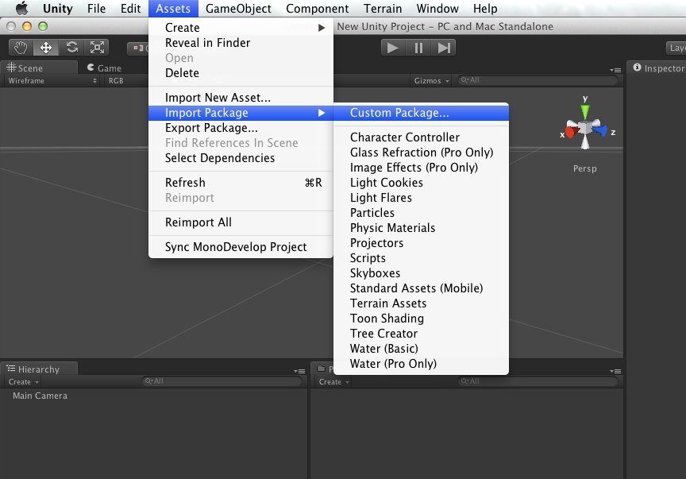
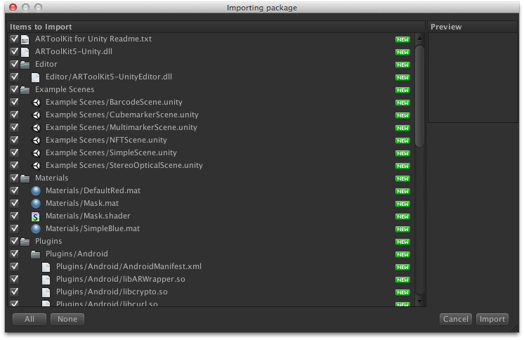
Your Unity project now contains the necessary files for augmented reality with ARToolKit.
The package contains:
ARToolKit5-Unity.dll.Editor/ARToolKit5-UnityEditor.Assets/Plugins directory (and subdirectories).Resources/ardata directory. A sample NFT dataset is included in the Assets/StreamingAssets directory.Example scenes.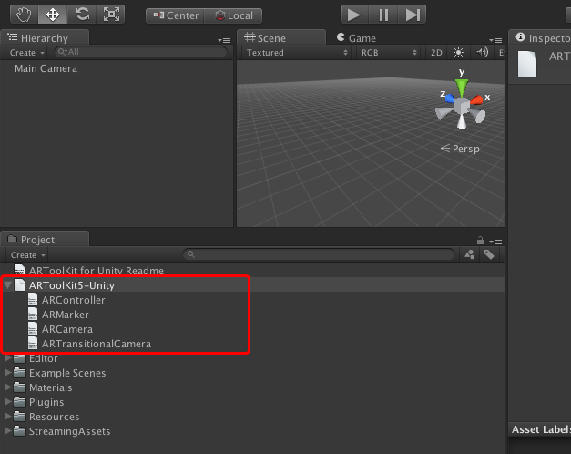
ARToolKit allows for dynamic AR scenes with more than one marker in Unity. All marker content can live in the same layer, and relations between content attached to different markers (e.g. physics) is easy to understand. The following three components work together to create an AR scene:
Create an object to hold the AR configuration objects, ARController and ARMarker. In the example projects, we have named this "ARToolKit". Drag an ARController onto this object.
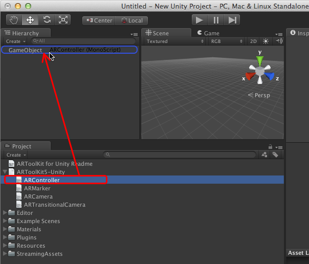
The ARController script will handle the creation and management of the AR tracking, including the video background. All the developer needs to provide is the Unity layer in which to display the video; usually this is "user layer 1", which you might want to rename to e.g. "AR Background". Layers are used to separate out parts of the scene so only certain parts are visible to certain cameras. In this case, the video background will be in its own background layer. You can take a moment now to define an "AR Foreground" layer, as well. This is where every marker's content will be shown.
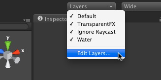 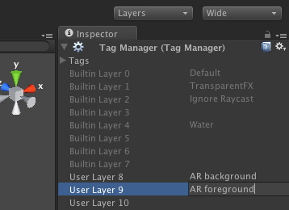
You should now be able to run the scene and see the live video. The developer can choose how the input video's aspect ratio is treated in respect to the display's aspect ratio. If they do not match, such as 4:3 video on a 16:10 screen, then the developer can choose either to stretch the video (which will introduce distortion), or use less of the screen (which will introduce empty bars). Empty bars will have the color of the background clearing camera which always renders to the entire screen.
Tracking requires markers, so drag as many ARMarkers as you wish to track. Configure these objects, being sure to set the "Tag" field on each ARMarker to something memorable -- this will be the name used by the dynamic scene to find this marker and get its data.
The ARMarker script will automatically locate pattern files that have been placed in the project's Resources/ardata/markers directory. The default installation will include the standard Hiro and Kanji patterns. These will appear in the dropdown list in the Marker's properties. Select the pattern you want to track. Give this marker a tag (a unique name to identify it within your project).
[NFT][marker_nft_training] markers can be used by choosing "NFT" as the marker type on the ARMarker component. This makes available an additional field where you can enter the name of the dataset. The actual NFT data (.iset, .fset, and .fset2) which are generated by the genTexData utility should placed into the folder Assets/StreamingAssets of your Unity project.
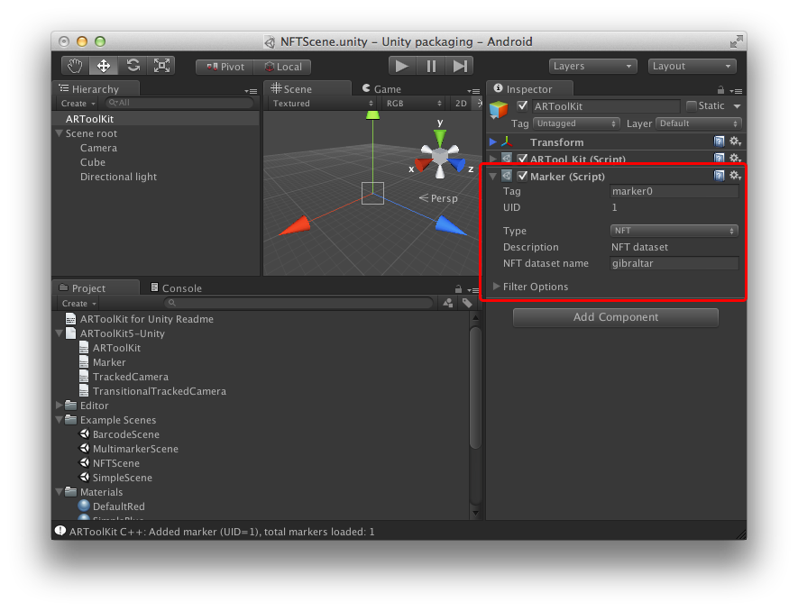
The SDK includes an example dataset (file names: gibraltar.iset, gibraltar.fset, gibraltar.fset2). The example NFT dataset can be enabled by entering the basename of the datafiles (in this case: gibraltar) into the "dataset" field.
Next, decide on the point in your scene graph which you would like to be the root of your AR scene. All dynamic AR scene content will live under this root, and its transform will be the origin for AR calculations. Normally, this will be an empty GameObject at the root of your scene, but it can be any GameObject. In the examples, this object is named "Scene root". Drag an AROrigin script onto this object. It's also useful to put this object and all children into its own layer, e.g. create a new user layer and name it "AR foreground".
Now, add a child GameObject beneath the scene root you created in the previous step. This object will hold the AR content for the first AR marker, so you could rename it to (for example) "Marker Scene 1". Attach an ARTrackedObject, and configure its "Tag" property to the same name you used on its corresponding ARMarker earlier. This associates the ARTrackedObject with the ARMarker. The object to which the ARTrackedObject is attached will have its position and rotation changed at runtime depending on the pose of the marker, and its child objects will be enabled/disabled depending on the visibility of the marker. Be sure that all ARTrackedObjects have an AROrigin attached to one of their parents, or else they won't display any content.
The last thing you need to add before content can be viewed is a Unity Camera object. This must be a child object of the AR scene root. Set its culling mask to the layer you chose earlier (We suggest "AR Foreground", and be sure that the "AR Background" is not selected). Attach an ARCamera script to this camera.
At this point you can run the scene again. Although no content appears on the marker yet, you should notice console messages appearing to notify that the marker has been found or lost.
Start with the ARTrackedObject you want to augment. This object will act as parent to the sub-scene that will appear on the marker. By default, markers appear in the scene standing vertically (like a billboard) at the origin. Usually however, you want the marker to lie flat on the ground, and this is what we'll do in this case. Add a GameObject under the ARTrackedObject you've selected, and in the Inspector, change its "Rotation: X" value to 90. This will rotate the child objects of this new GameObject by 90 degrees about the X axis (in a left-hand sense), appearing correctly to the ARCamera.
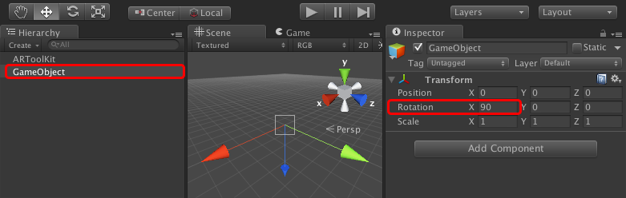
Add a cube to the rotated GameObject. This will be the initial simple scene. Set the scale to {0.08, 0.08, 0.08}, and position to {0, 0.04, 0}, to sit on the marker correctly.
Select the new group you created and ensure it is assigned to the foreground layer created earlier (applying the change to all children when prompted).
Press "Play" again, and you should now be able to see the cube on the marker. Congratulations!
In a standard ARToolKit application, there are several data files required, such as camera calibrations and patterns. When working with the Unity plugin, these files are included in the projects Assets directory, under the Resources/ardata directory. In order to be recognized by Unity, the files must follow a particular naming scheme:
camera_para.dat, should be stored in Assets/Resources/ardata/ as camera_para.bytes.patt.hiro.txt).These files can still be generated using the standard ARToolKit utilities; it is simply the filenames and locations that are important for the Unity plugin.
By default the plugin operates in meters. The default marker size is therefore 0.08 (8cm) and the camera has near and far planes of 0.1 and 5.0 respectively (10cm - 5m). These can be changed in the ARController and ARMarker properties.
If you are not using NFT markers, be sure to remove any NFT datasets from the StreamingAssets folder before final build to avoid unwanted extra disk usage. The same convention goes for traditional template markers, as well- We suggest you remove them if you do not plan to use them.
Read up on the scripts of ARToolKit in Unity. Also check out our low-level API.
Unity provides a rich scripting interface for developing interactive applications. Scripts can be written in Javascript or C#, and have access to the vast library of objects and functions. Basically any object that can be added manually in the Unity editor can also be scripted. Scripts also integrate seamlessly into the editor. For example, public fields in a script will automatically be presented in the UI using a suitable control so that their values can be easily configured.
Unity’s C# support is possible through the Mono framework, which provides a cross-platform implementation of Microsoft’s .NET framework. C# is a modern object-oriented language, and due to its general popularity, there is abundant information and sets of tutorials on its use. The Mono implementation does not provide all the feature of .NET on Windows but the core language features are present.
An additional feature of the Mono runtime is its support for native code; that is, compiled CPU-specific code which communicates directly with the operating system application programming interfaces (APIs) on the platform. Communication between code running in the Mono managed C# environment communicates with the native unmanaged code via Platform Invocation Services (P/Invoke). This permits a C# script, running within Unity, to call a native function implemented in C/C++. This is the mechanism by which plugins are supported in Unity, and this is how ARToolKit for Unity is implemented. ARToolKit communicates with the OS to retrieve images from the camera, perform the computation-intensive tasks associated with marker tracking, and even push the camera image to a native texture, all in native code. Then, a simplified set of simple function calls to configure, run, and shutdown the library are exposed externally. These function calls are mapped across to DllImport definitions in a C# script, and can then be directly called from Unity.
On Windows, OS X, and Android, libARWrapper is implemented as a dynamic library (packaged as a .dll, a bundled .dylib, and a .so file respectively). On iOS, which does not allow dynamic linking in user code, libARWrapper is provided as a static library (.a file) that is linked into the final application.
This illustration shows the relationship between the various entities that make up ARToolKit for Unity: 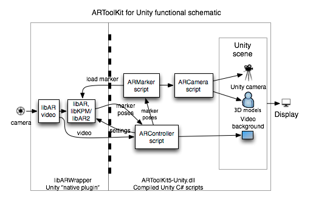
To get a good overview of ARToolKit on the Unity platform, please see our getting started guide.
ARToolKit is added to your project by adding an instance of the ARController script to a GameObject in your scene. It does not matter where in the scene the GameObject is, and in most ARToolKit for Unity examples, a single object at the scene root holds the ARController.
It is highly recommended that the ARController is added to the scene using the Unity Editor, as programmatic configuration of the ARController is complex. If you wish to ignore this recommendation, you are encouraged to examine the public properties of the ARController script and the way these are configured in the ARControllerEditor Unity Editor script.
By default, ARController implements the Start(), Stop(), and Update() MonoBehaviours, and calls these functions, respectively:
- StartAR() - Begin tracking the configured AR scene.
- UpdateAR() - Perform tracking updates and housekeeping.
- StopAR() - Stops tracking.
By default, StartAR() is called during Start(). If you wish to override the auto-start, set the public property AutoStartAR
<pre>
GameObject myARObject;
ARController myARController = myARObject.GetComponent<ARMarker>();
myARController.AutoStartAR = false;
</pre>
and then you can manually invoke StartAR()/StopAR() at more appropriate times for your application.
###Adding, Removing, Finding and Querying Markers
The ARMarker script presents an abstraction of a marker for use in Unity.
#### Adding a new marker
To dynamically load a new marker for tracking, you should instantiate a GameObject somewhere in your scene, and attach an ARMarker to it. Usually all ARMarker instances are added to the same GameObject that holds the ARController instance:
<pre>
GameObject myARObject;
myMarker = myARObject.AddComponent("ARMarker") as ARMarker;
// Configure
myMarker. myMarker.Tag = "myMarker1";
myMarker.MarkerType = MarkerType.SquareBarcode;
myMarker.BarcodeID = 0;
myMarker.PatternWidth = 0.08f;
// In metres, i.e. 0.08 = 8cm, or 3.15"
myMarker.Load();
</pre>
You can take a look at the source for ARMarker to see the other options.
Here are some points to note when adding an ARMarker via a script:
ARController.StartAR() has already been called, actual marker loading into ARToolKit is deferred until AR startup, and errors such as missing data may not show up until then.ARMarker added in the Unity Editor, this is done by the ARMarkerEditor script which runs in the Unity Editor.)<pre> // Note that FindObjectsOfType is expensive; don't use every frame. ARMarker[] markers = FindObjectsOfType(typeof(ARMarker)) as ARMarker[]; </pre>
<pre> // If you need to get a reference to it... GameObject myARObject; ARMarker myMarker = myARObject.GetComponent<ARMarker>(); // Now destroy it. Destroy(GetComponent(myMarker)); // If you just want to disable it instead: myMarker.enabled = false; </pre>
<pre> ARMarker myMarker; if (myMarker.Visible) Debug.Log("Marker is visible."); // Pose is a 4x4 homogenous coordinate transform, in left-hand coordinates. // Pose is the transform of the marker with respect to the observing camera. To get the camera // pose with respect to the marker, take pose.inverse; Matrix4x4 pose = myMarker.TransformationMatrix; Vec3 position = ARUtilityFunctions.PositionFromMatrix(pose); Quaternion orientation = ARUtilityFunctions.QuaternionFromMatrix(pose); </pre>
A simple means of connecting a single ARMarker (which might represent either a single pictorial or barcode square marker, a multi- square marker set, or an NFT marker) to the Unity scene is to use the ARCamera script. This script must be on an GameObject that is a child of the AROrigin GameObject.
The ARTrackedObject is associated with an ARMarker by setting ARTrackedObject Marker Tag to the same value as the desired ARMarker Tag. When the ARMarker appears and is tracked, the ARCamera Unity Camera draws its view at the same pose relative to its parent by means of the ARTrackedObject as the real camera to the real marker, and when the ARMarker disappears, the Camera's output is hidden.
By putting game objects into layers, and setting the culling mask of the camera to display only the layer with desired objects, this allows content to be easily shown/hidden in concert with a marker. Generally, all markers and their augmentations go on one layer, which we will call the foreground.
<pre> // Generally, you should use a tag or other means to identify the camera you want to modify. Camera[] Cameras = FindObjectsOfType(typeof(Camera)) as Camera[]; myCamera = Cameras[0]; // Set the culling mask for this camera to identify the layers you want to be shown/hidden. Do this before adding the ARCamera. myARForegroundLayer = 9; // 0-based index, so 9 = user layer 2. myCamera.cullingMask = 1\<\< myARForegroundLayer; myCamera.AddComponent("ARCamera") as ARCamera; </pre>
Configuring the ARTrackedObject:
<pre> myARTrackedObject = arToolKitRoot.GetComponent<ARTrackedObject>(); myARTrackedObject.MarkerTag = "myMarker1"; // As set in example above. </pre>
To allow control over aspects of GameObjects other than their visibility, you can connect your GameObject to the ARTrackedObject's eventReceiver property. When the marker appears, is tracked, or disappears, these methods in the eventReceiver or any of its children are called via Unity's BroadcastMessage system.
<csharp> // All optional. OnMarkerFound(ARMarker marker); OnMarkerTracked(ARMarker marker); OnMarkerLost(ARMarker marker); </pre>
The ARCamera's projection and viewport are set during AR startup. At present, it is not possible to add an ARCamera after StartAR() has been called, unless you modify ARController.
Ultimately, all AR-related functions in ARToolKit for Unity's C# scripts call the API defined by the native plugin, libARWrapper. You are free to make calls to this API too.
Full API documentation for libARWrapper's simplified C-based API is available on our website]c_docs.
To get started with using ARToolKit for Unity on Android, first visit our Getting Started guide.
When exporting to Android, some Player Settings must be configured as follows to work correctly with ARToolKit for Unity (settings not mentioned can be adjusted to suit the user): 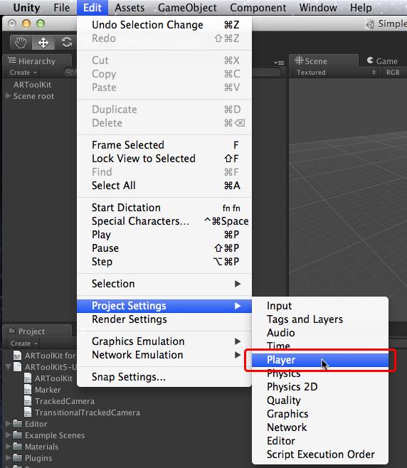
All Android applications must be uniquely identified by a bundle identifier. ARToolKit for Android is supplied with a default bundle ID of "com.mycompany.myapp" but this will need to be changed before deployment of your finished application.
Note that when using ARToolKit for Unity, the bundle ID has to be set in two places: the Unity Player settings, and in the file "Assets/Plugins/Android/AndroidManifest.xml".
First set the bundle ID in Unity (replacing com.mycompany.myapp with your chosen ID): 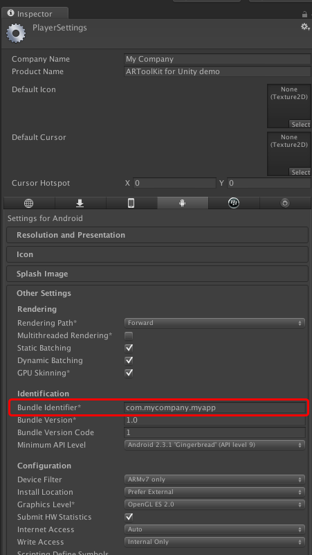
Secondly, the bundle ID must be manually changed in the Android manifest that ARToolKit provides. To do this, look inside your Unity project folder, for the file "Assets/Plugins/Android/AndroidManifest.xml". Open the file in a text editor and locate the text package="com.mycompany.myapp", editing the "com.mycompany.myapp" to match the bundle identifier set in Unity.
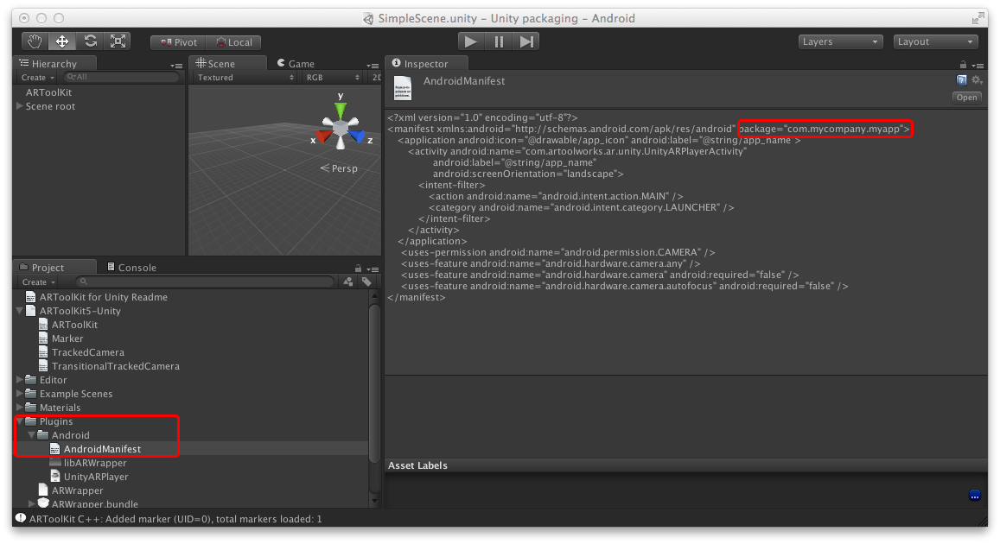
It is possible to modify the Android Java portion of ARToolKit for Unity to allow for incorporation into a larger Android application, or any other type of conceivable customization.
Unity for Android comes bundled with the source code for its outermost Activity subclass (UnityPlayerActivity). ARToolKit for Unity subclasses this in a new class UnityARPlayerActivity. This class is packaged as a .jar file and provided in ARToolKit for Unity at path Assets/Plugins/Android/UnityARPlayer.jar. It is linked into the final product by Unity. Source for UnityARPlayerActivity is also supplied. You can find it in ARToolKit for Unity at path extras/Android UnityARPlayer source/.
The following images show how to package this source into the .jar file.
First, ensure that the project correctly references the locations of "android.jar" (from the Android SDK) and the "classes.jar" provided by Unity.
"classes.jar" is part of the Unity installed package on your system. On OS X this is typically inside the Unity application package at path
/Applications/Unity/Unity.app/Contents/PlaybackEngines/AndroidPlayer/bin/classes.jar
and on Windows at path
C:\Program Files\Unity\Editor\Data\PlaybackEngines\AndroidPlayer\bin\classes.jar.
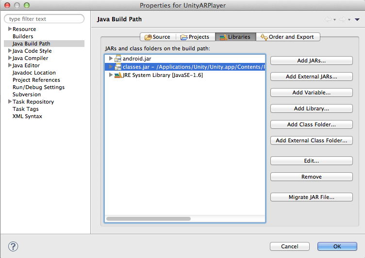
Next, invoke an export jar operation in Eclipse (File->Export...)
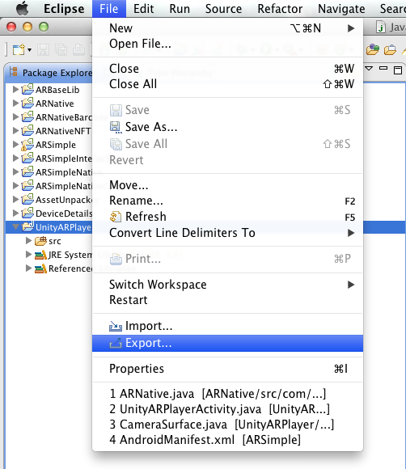 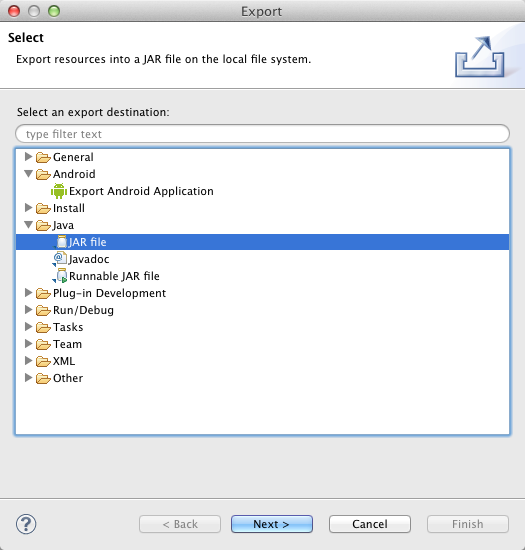
The correct classes must be exported. This includes:
org/artoolkit/ar/base/NativeInterface.class
org/artoolkit/ar/unity/CameraSurface.class
org/artoolkit/ar/unity/UnityARPlayerActivity.class
See the following image for how to select the classes. 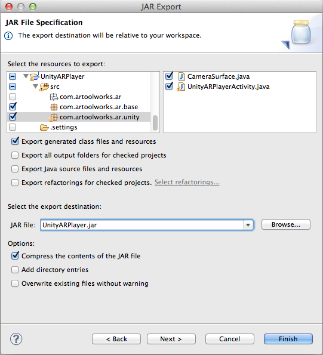
Once the jar has been exported, place it in your Unity project at path Assets/Plugins/Android/UnityARPlayer.jar
Why is NFT only API 9 and above? On Android OS releases v2.2.x and earlier, a defect in the handling of compressed resources inside .jar files embedded in .apks limits the size of compressed resources to as little as 1.0 megabyte (although this can be higher on some variants of the 2.2 OS series, depending on the device manufacturer). This imposes a limitation on the size of the NFT datasets which can be used if targeting Android 2.2 to 1.0 megabyte. This limitation was removed in Android OS 2.3.
To get started with using ARToolKit for Unity on iOS, first visit our Getting Started guide. Also, look here for iOS specific documentation.
Once the Xcode project has been exported from Unity, the following adjustments should be made in Xcode Acclerate.framework will need to be added (in addition to the Unity-selected frameworks). 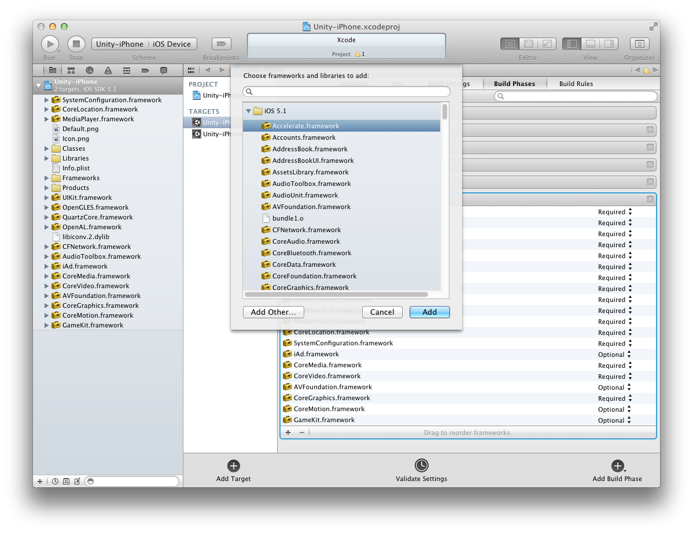
For reference, the complete list of iOS frameworks and libraries required for correct linking is:
To get started with using ARToolKit for Unity on OS X, first visit our Getting Started guide.
Many common issues can be diagnosed by looking at Unity's Editor.log or Player.log. On OS X, these are located in the folder \~/Library/Logs/Unity/. The OS X console viewer (`/Applications/Utilities/Console.app1) is a good means of easily viewing these logs.
This is a known issue with Unity 4.x (confirmed on Unity 4.1.x and 4.2.x) when building the standalone OS X player, the StreamingAssets folder from the Unity project is not being correctly copied into the built application bundle. You can confirm this problem by looking for errors in the Unity Player.log which indicate that StreamingAssets folder is missing.
A workaround is to manually copy the StreamingAssets folder into the bundle. To do this:
To get started with using ARToolKit for Unity on Windows, first visit our Getting Started guide.
ARToolKit for Unity follows the standard ARToolKit video configuration commands using DirectShow.
If using the default video module (WinDS), you can have ARToolKit for Unity use a second webcam or video input source by adding -devNum=2 in the video configuration dialog.
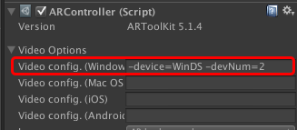
If you wish to use the alternate video module (WinDSVL), you must specify either the DirectShow "friendly name" for the device, or a device UUID, using XML. An example is: -device=WinDSVL <?xml version="1.0" encoding="UTF-8"?><dsvl_input><camera show_format_dialog="false" friendly_name="Logitech Quickcam"><pixel_format><RGB32 flip_h="false" flip_v="true" /></pixel_format></camera></dsvl_input>
Many common issues can be diagnosed by looking at Unity's Editor.log or Player.log. On Windows, Player.log is located in the folder EXECNAME_Data\output_log.txt where EXECNAME_Data is a folder next to the executable with your game.
If you encounter an error like "DllNotFoundException: [...]/Assets/Plugins/ARWrapper.dll" (with [...] as the path to your Unity project).
In spite of the ARWrapper.dll clearly being in the referred to folder, the Unity Editor may not be able to find a required dependent DLL (i.e. a DLL on which the ARWrapper DLL depends). Confusingly, the dependent DLLs must be present in same folder as the .exe file of the host application (the Unity Editor, in this case), which is typically C:\Program Files (x86)\Unity\Editor. The required DLLs are normally (at least since ARToolKit for Unity v2.0.3) installed by the ARToolKit for Unity installer, but if you are having difficulty, you can double check. Check that the following are present in that folder:
Also required are the Visual Studio 2010 runtimes, although these must be installed into the Windows system.
See Deploying an ARToolKit Application on Windows.
This page expounds upon the scripts referenced in the getting started guide. For lower-level usage, please see our lower level API documentation.
The ARController script manages the overall operation of the tracking plugin. It performs the necessary native plugin calls, and allows the developer to configure general settings. There should only ever be one ARController script in a scene.
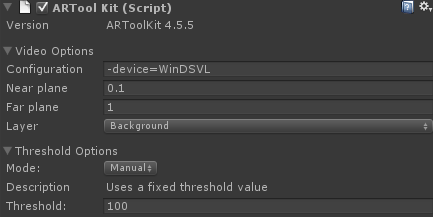
The ARMarker script represents one tracked marker in the system. Add one for each individual marker that you want to track.
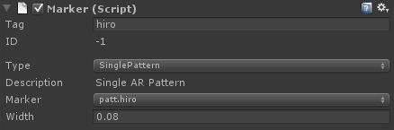
Represents the marker as tracked in space. Content relevant to the marker will be attached to this object.
The ARTrackedObject generates the following events using Unity's SendMessage command. To handle these events, implement the matching event handler in a script, and attach it to the ARCamera.
Represents the center of the ARToolKit world and is the root of the scene. Normally can be placed at {0, 0, 0}, but you may move it elsewhere, if you wish. The ARCamera and every ARTrackedObject should be children to this object. This allows for a few benefits:
The ARCamera script associates a camera to the AR content. Add this to a camera under the AROrigin.
Markers are visually represented within the Unity editor so that you can scale and position your content accordingly. 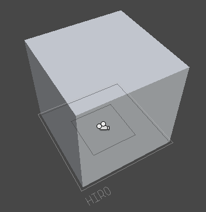
{kind=link}